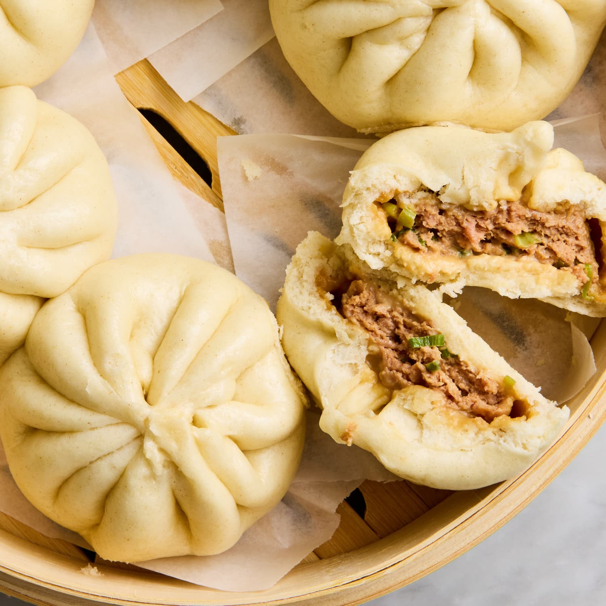

Home
Pork Bun Recipe

Description
In the hollow sphere, dumpling-esque food group (along with empanadas)
Ingredients
Following is a list of ingredients (unordered):
- Flour
- Pork and spices for filling
Steps
Following is a list of steps to execute in order:
- Create your dough from flour and water
- Whole lotta things in between
- Steam for more than an hour (I think) and then serve